Journal · Turkey
Sixteen days in Turkey
- When
- 17 July – 1 August 2019 (16 days)
- Who
- My wife, our four kids (13, 11, 9 and 2) and me
- Route
- Istanbul → Antalya → Konya → Cappadocia → Istanbul
- Getting around
- Flights, intercity buses, then trams and ferries with an Istanbulkart
Some trips are planned around photography. This one was planned around a family of six, a July heatwave and a list of places I'd wanted to see for years. Sixteen days, four cities, two continents, four kids (the youngest still in a stroller), an unreasonable amount of ayran, and a camera that came along for all of it. Here is how it went, day by day, with the bits that are useful if you're planning the same route.
Istanbul, the Old City (17–19 July)
Day 1 — Landing in two empires at once
Our Pegasus flight left Sharjah at 5am, which is a time of day I only respect in theory. Landing at Sabiha Gökçen, on the Asian side, everything ran on time: immigration, bags, the lot. Then the first decision of the trip: how to get to the Old City.
Public transport from Sabiha will get you to Taksim, but not to Sultanahmet, and with kids, suitcases and a 5am face, that's a second journey nobody wants. We took a private taxi for €55, booked in advance at a fixed price. I'd recommend that to any family. Istanbul's taxi drivers have a reputation, and some of it is earned: the "broken" meter, the scenic route past half the city, the 50-lira note that magically becomes a 5 when you hand it over. A pre-booked car with an agreed price removes all of that, and the driver drops you at your hotel door.
Our hotel was the Albatros Hagia Sophia, a few minutes' walk from the monument it's named after. We arrived long before check-in, so they asked us to wait while the room was made ready. That's typical here: many Old City hotels are old Ottoman-era buildings, renovated inside, with tiny lifts squeezed in later. Ours fitted two people and one suitcase, or one person and a strong opinion. We filled the time with our first Turkish pizza (pide, a boat-shaped flatbread) and then slept off the flight.
I have one rule when I plan a trip: stay where the sights are. It costs a little more, but everything becomes a walk or a short tram ride, and you get the early mornings and late evenings when a place is at its best. In Istanbul that means Sultanahmet, the historic heart of the city. Hagia Sophia, the Blue Mosque, Topkapı Palace, the Basilica Cistern and the old Hippodrome are all within about ten minutes on foot of each other.
In the evening we walked into Gülhane Park. It was once the outer garden of Topkapı Palace, reserved for the palace, and opened to the public in 1912. In 1839 a famous reform decree, the Edict of Gülhane, was read out here, which is a lot of history for a place where four kids mainly wanted to run around. At the far end stands the Goths' Column, a Roman monument that's older than almost everything else around it.
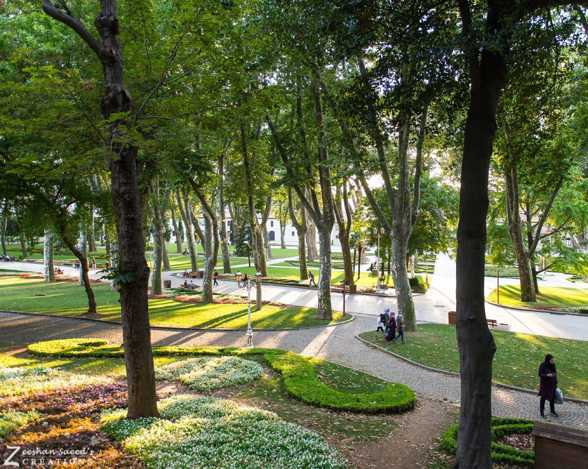
From there we crossed to Sultanahmet Park, the square with Hagia Sophia on one side and the Blue Mosque on the other. You can sit on a bench between two of the most famous buildings on earth and eat a simit, which is exactly what we did. Beside it is the old Hippodrome of Constantinople, where chariot races were held for centuries. Three monuments survive along its line: an Egyptian obelisk brought here by Emperor Theodosius, the bronze Serpent Column from Delphi, and the German Fountain, a gift from Kaiser Wilhelm II.
Then the Blue Mosque, properly the Sultan Ahmed Mosque, built between 1609 and 1617 by the architect Sedefkâr Mehmed Ağa. The "blue" comes from the more than 20,000 hand-painted İznik tiles inside. It has six minarets, which was unusual for the time, and the favourite story is that the sultan asked for golden minarets (altın) and the architect heard six (altı). It's probably a legend, but it's a good one, and every guide tells it with total confidence. Dinner near the hotel, and day one was done.
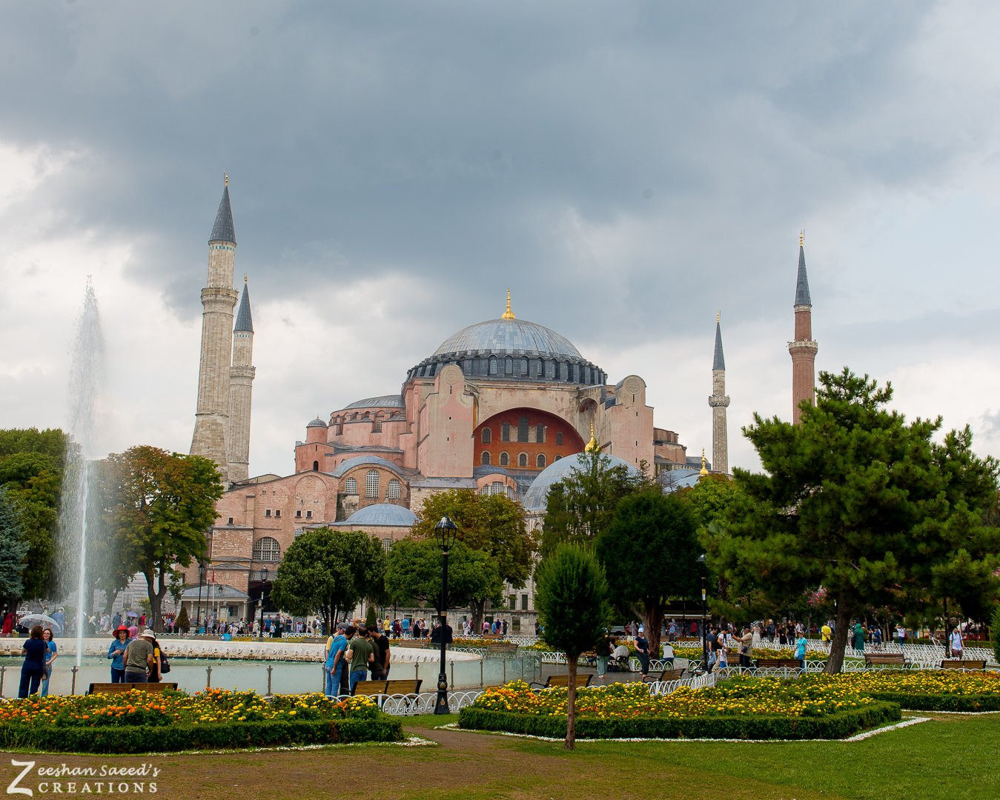
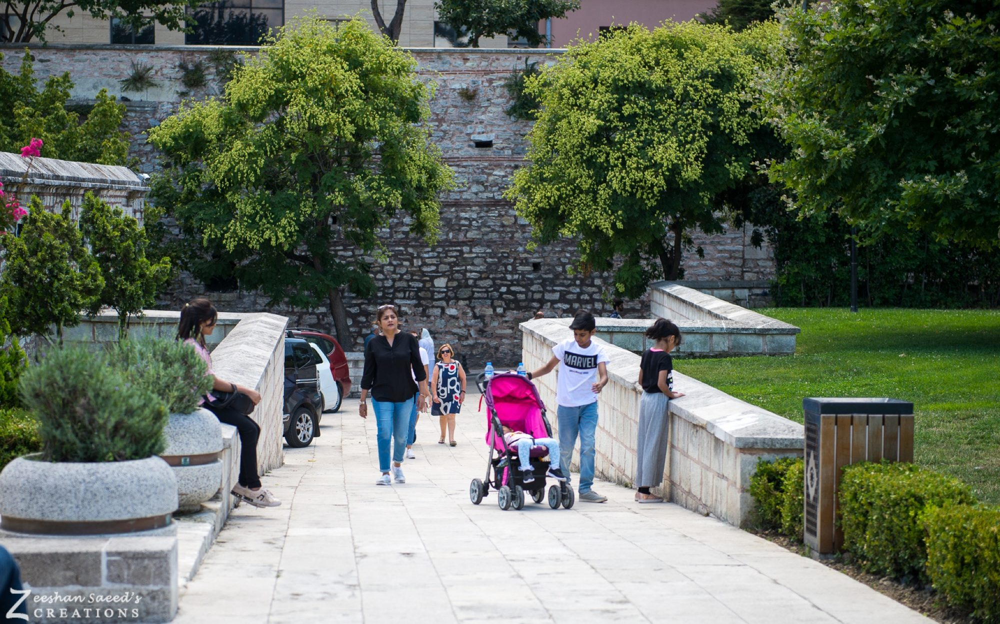
Day 2 — Cisterns, bazaars and a ferry to Asia
Breakfast was on the hotel rooftop with Hagia Sophia on one side and the Blue Mosque on the other. It is very hard to complain about eggs with that view, although one of the kids managed.
First stop, two minutes away: the Basilica Cistern. It was built in the 6th century under Emperor Justinian to store water for the Great Palace, and it's essentially an underground forest of 336 marble columns standing in shallow water. Many of the columns were recycled from older buildings, which explains the two famous Medusa heads at the back, one on its side and one upside down. Nobody knows for sure why they were placed that way. It's cool, dim and quiet, which in July is reason enough to go. If it looks familiar, it has turned up in a James Bond film and in Dan Brown's Inferno.
Then we bought an Istanbulkart for everyone. It's a rechargeable transport card that works on the tram, metro, buses, ferries and funiculars, and it's cheaper per ride than buying single tickets. One full-fare card can pay for several people, but a card each is simpler when you're herding six people through a turnstile. From this day on we used public transport almost everywhere, and it was excellent: the T1 tram links Sultanahmet with the bazaars and Eminönü, the ferries cross the Bosphorus and the Golden Horn every few minutes, and the metro and buses fill the gaps. The ferries in particular are the best value in the city. For the price of a bus ride you get a Bosphorus cruise with seagulls and tea.
We took the tram to Beyazıt, took photos by the grand gate of Istanbul University, and walked into the Grand Bazaar. It began in the 1450s, soon after the Ottoman conquest, around a stone warehouse built under Sultan Mehmed II, and it grew into one of the largest covered markets in the world, with around 4,000 shops over dozens of streets. You will get lost. That's part of it. A few things to know: prices are a starting point for conversation, so bargain politely; "real" silk, leather and antiques are often not; the friendly man who walks you to his "cousin's carpet shop" is not taking you there for the tea; and always agree on the currency before you agree on the price.
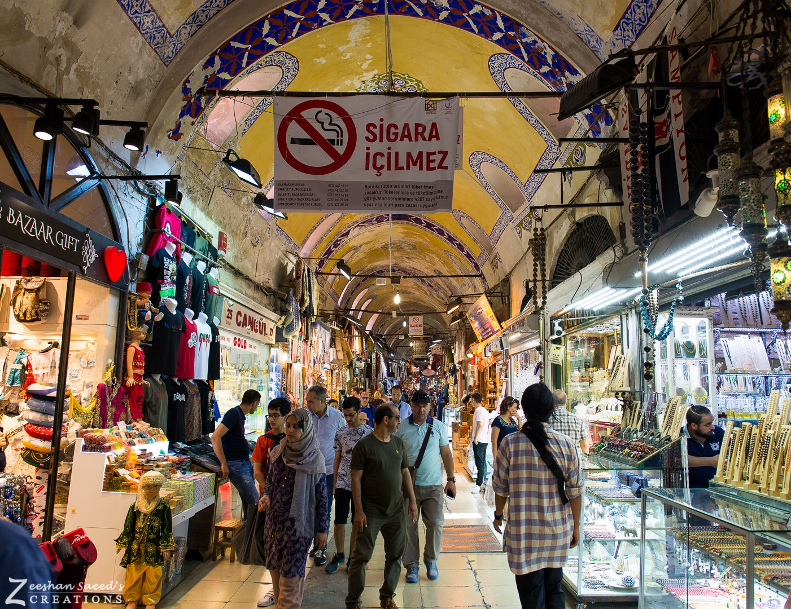
From the bazaar we walked uphill to the Süleymaniye Mosque, my favourite building in the city. It was built between 1550 and 1557 by Mimar Sinan, the great Ottoman architect, for Suleiman the Magnificent. It sits on Istanbul's third hill and dominates the skyline over the Golden Horn. A few details I love: ostrich eggs were hung among the lamps to keep spiders away, and the smoke from the thousands of oil lamps was channelled into a room where the soot was collected to make ink.
In the garden behind the mosque are two tombs: Suleiman the Magnificent himself, and his wife Hürrem Sultan (Roxelana), who began life as a captive and ended it as one of the most powerful women in Ottoman history. Just outside the complex, in a modest corner, is the tomb of Sinan the architect, watching over his masterpiece. There's something right about that.
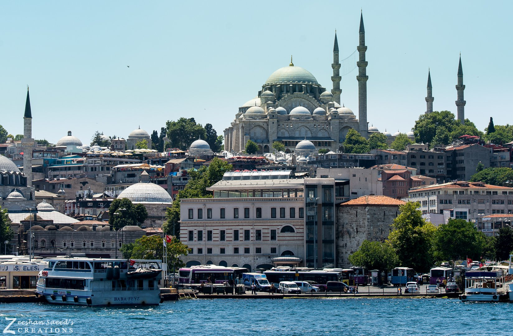
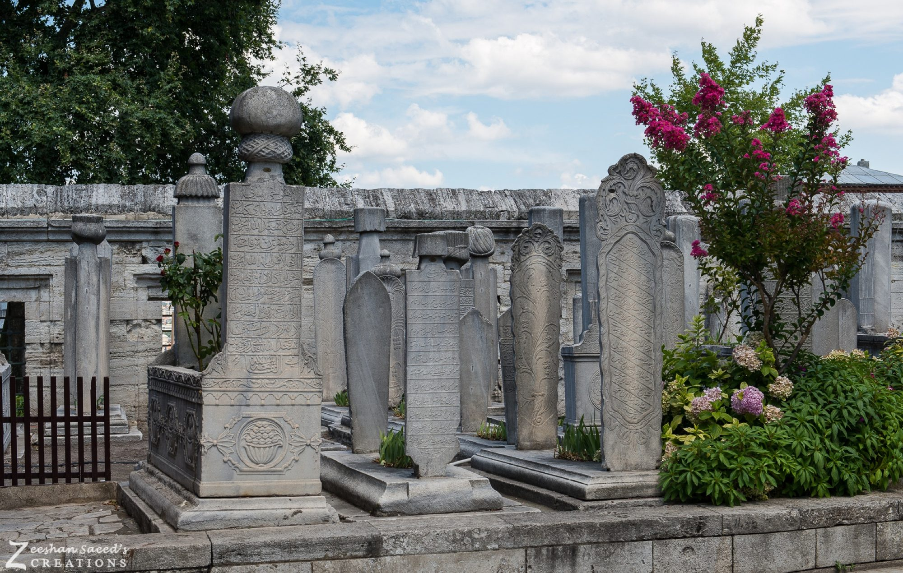
We then walked downhill to Eminönü through the Spice Bazaar, completed in the 1660s as part of the New Mosque complex. Its rent helped pay for the mosque. It's also called the Egyptian Bazaar, because it was built with revenues from the Ottoman province of Egypt (the popular version says it's because the spices arrived from Egypt). The narrow streets around it, crowded, loud and full of shopkeepers calling out, reminded me strongly of Kharadar in Karachi. Only slightly cleaner. I say this with love for both.
At Eminönü we took the ferry across to Üsküdar, on the Asian side, to pray Asr at the Mihrimah Sultan Mosque, right by the ferry pier. It was built by Sinan in the 1540s for Mihrimah, Suleiman's daughter. Sinan later built her a second mosque at Edirnekapı, on the European side, and there's a lovely legend that the two were placed so that, on a certain day, the sun sets behind one as the moon rises behind the other. Mihrimah means "sun and moon". Whether or not Sinan was in love with the sultan's daughter, as the story says, he certainly built her two very beautiful mosques.
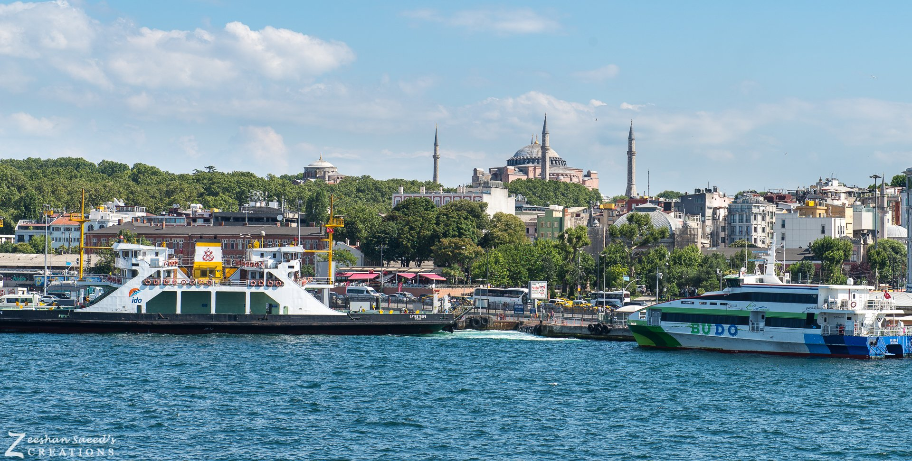
This was also the day we discovered ayran: chilled yoghurt, water and a pinch of salt. For a Pakistani it's namkeen lassi; for anyone who has lived in Dubai, it's laban. It's everywhere in Turkey, it's cheap, and it's the perfect partner for a döner or a kebab. It's even been called Turkey's national drink. In 40-degree heat it stops being a drink and becomes a survival strategy. By the end of the trip we were drinking it with breakfast.
Ferry back to Eminönü, tram to the hotel, dinner, sleep.
Day 3 — Eyüp and Pierre Loti
Tram to Eminönü, then a ferry up the Golden Horn to Eyüp. The ferry stops on the way at Fener, and you can see the red-brick Phanar Greek Orthodox College on the hill.
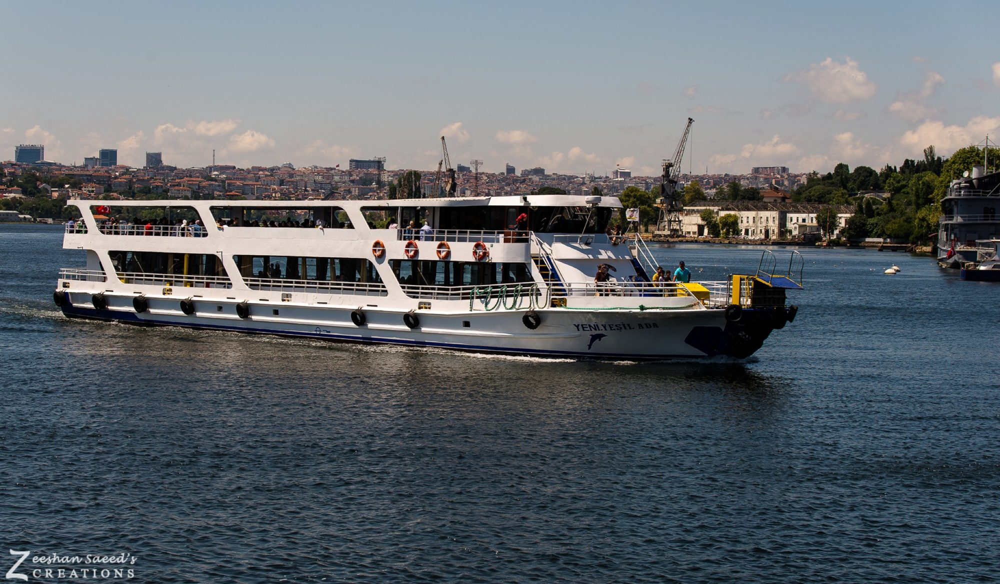
The Eyüp Sultan Mosque is one of the holiest places in Istanbul. It stands by the tomb of Abu Ayyub al-Ansari, a companion of the Prophet Muhammad (peace be upon him), who is said to have died during an Arab siege of Constantinople in the 7th century. After the conquest in 1453, Mehmed II built a mosque here in 1458; the one you see today is a rebuilding from around 1800. For centuries, new Ottoman sultans came here to be girded with the Sword of Osman, the Ottoman version of a coronation. The complex is busy with pilgrims, families and wedding parties, and around it are holy relics and some of the most beautiful old tombs in the city.
The plan was to take the cable car up to Pierre Loti Hill. Half of Istanbul had the same plan. Instead we squeezed into a small van that was heading to the top, which was cheaper, faster, and gave us a taste of local driving. Recommended for the adventurous.
Pierre Loti was a French naval officer and novelist who fell in love with Istanbul in the late 19th century and spent time at the café at the top, writing and looking out over the Golden Horn. The café and the hill now carry his name. The view is the reason to go: the whole Golden Horn curving down towards the old city.
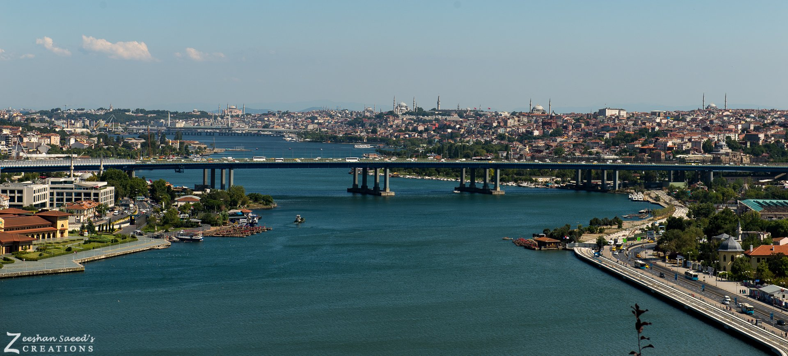
Going back, we walked down to Eyüp instead. It's easy and downhill, through a huge cemetery that covers the hillside, with old Ottoman gravestones carved with turbans and flowers next to new ones. People have wanted to be buried near Abu Ayyub al-Ansari for over 500 years. It's peaceful, and it's one of those places where you put the camera down for a while.
Back in Eyüp we had döner and (of course) ayran, browsed the market and did some shopping, then caught the ferry back to Eminönü and the tram to the hotel. That night we packed for Antalya. Which brings us to the airport.
Antalya (20–22 July)
Day 4 — Forty-five minutes to spare
We reached the airport for our Turkish Airlines flight with 45 minutes to go. With four kids. One of them two years old. In July. If you have ever tried to push a stroller, a pile of suitcases and a child who needs the bathroom right now through a Turkish airport, you'll understand my heart rate. The staff were wonderful: they spotted the panic, waved us through the queues and got us onto the plane. Thank you, whoever you were. Lesson learned; we were early for every journey after that.
Flying inside Turkey is one of the best travel tips I can give. The country is huge, so a bus from Istanbul to Antalya takes most of a day, while the flight is about an hour. With Turkish Airlines, its budget brand AJet (then AnadoluJet) and Pegasus all competing, fares are often surprisingly cheap if you book a few weeks ahead, and the airports are efficient.
At Antalya we took a private taxi straight to the old town, Kaleiçi, and checked into the Delight Deluxe Port hotel: small, quiet, family-friendly, and right in the middle of everything. We loved Antalya immediately. We did not love the temperature. July on the Turkish Riviera is not warm; it is a personal attack.
Antalya was founded in the 2nd century BC by Attalus II, king of Pergamon, and named Attaleia after him. The Romans came next, then the Byzantines, then the Seljuks and the Ottomans, and each left something behind inside the old walls. Kaleiçi ("inside the castle") is a maze of narrow lanes, restored Ottoman wooden houses with overhanging balconies, bougainvillea, and the fluted Yivli Minaret, a Seljuk tower from the 13th century that has become the city's symbol.
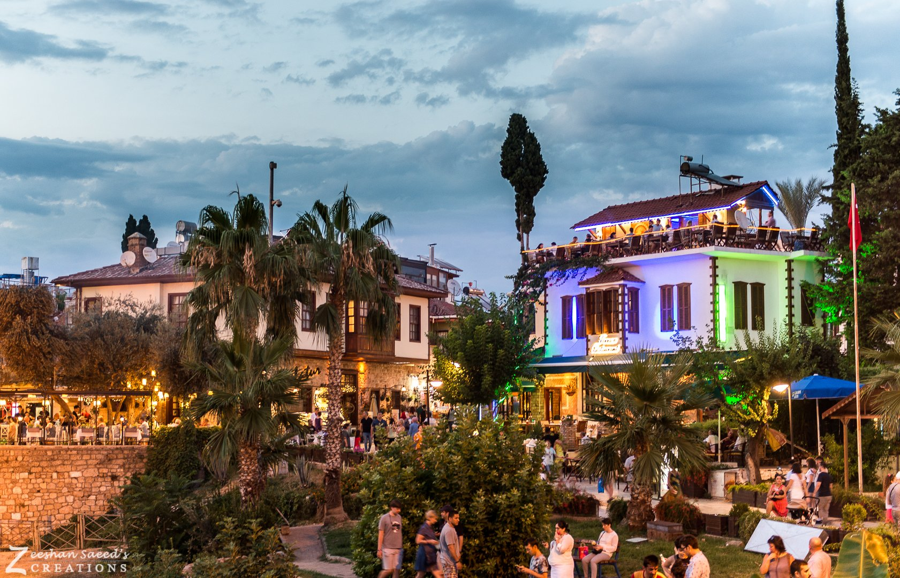
Once the sun went down we walked the whole area and ended up in Karaalioğlu Park, a long green park on the clifftop above the sea, with sea breezes, families on the grass and a glorious view across the bay to the mountains. Dinner was nearby. A confession: in Antalya, Burger King became our go-to stop. You can judge me. You weren't there in the heat, with kids who'd eaten kebab four days in a row.
Kaleiçi is at its best after dark. The old houses have become boutique hotels, cafés and bars with courtyards and rooftop terraces. It works because it's compact and walkable, close to the marina, full of tourists from all over Europe and young locals, and because nobody in their right mind goes out before sunset in summer, so everyone is out at once, late. The result is music drifting out of courtyards, tea glasses clinking and the whole old town buzzing until midnight.
Day 5 — Aspendos and Kurşunlu
After breakfast we hired a taxi for the day, which is easy to arrange in Antalya and worth it for a family.
First stop: Aspendos, about 40 km east of Antalya, and the best-preserved Roman theatre in the world. It was built around 155 AD by an architect named Zenon, and it seated about 7,000 people. It survived in such good shape partly because the Seljuks used it as a caravanserai in the 13th century and kept it repaired. The acoustics are still remarkable: a whisper from the stage carries to the top rows. It still hosts performances today, including an opera and ballet festival. Around the theatre are the remains of the ancient city on the hill above it, and a long section of a Roman aqueduct across the plain, one of the finest anywhere. We saw what we could, but by late morning the stone was radiating heat like an oven, so the full hilltop walk will have to wait for a cooler visit.
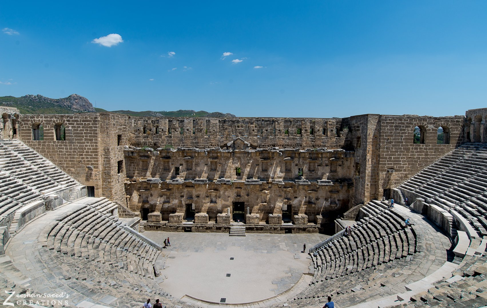
Next, Kurşunlu Waterfall, the antidote. It's a nature park about 19 km from the city, protected since 1991, where a stream drops into a green pool surrounded by shady woodland and walking paths. After Aspendos, ten degrees of shade felt like air conditioning. We stayed, wandered, cooled off, then had a late lunch and went back to the hotel.
Day 6 — The heat wins (but we see the old town anyway)
The plan was a day trip to Side and Manavgat. The weather had other ideas, so we declared a rest day, and honestly, the kids voted for the hotel pool by a landslide.
In the evening we headed out along Atatürk Caddesi, the palm-lined boulevard that runs along the old town walls. I left the family wandering while I took a taxi to the bus station to book our tickets to Konya for the next day. (You can book online now, but in 2019 the counter was easier.) When I got back an hour later, nobody had noticed I'd gone, which says something about either the shops or me.
Together we walked through Üç Kapılar, "the Three Gates", better known as Hadrian's Gate. It's a marble triumphal arch built to honour Emperor Hadrian's visit to the city in 130 AD. For centuries it was hidden inside the later city walls, until they were pulled down in the 1950s, which is probably why it survived so well. Look down as you walk through and you can see grooves worn into the stone by cart wheels.
From there we went through the old town bazaar, with its lamps, spices, Turkish delight and "genuine fake" watches, and down the winding lanes to the old harbour. This little marina, tucked under the cliffs, has been Antalya's port for over 2,000 years. Today it's full of wooden gulets offering boat trips, restaurants and fishermen, and in the evening light it's one of the prettiest places on the whole coast.
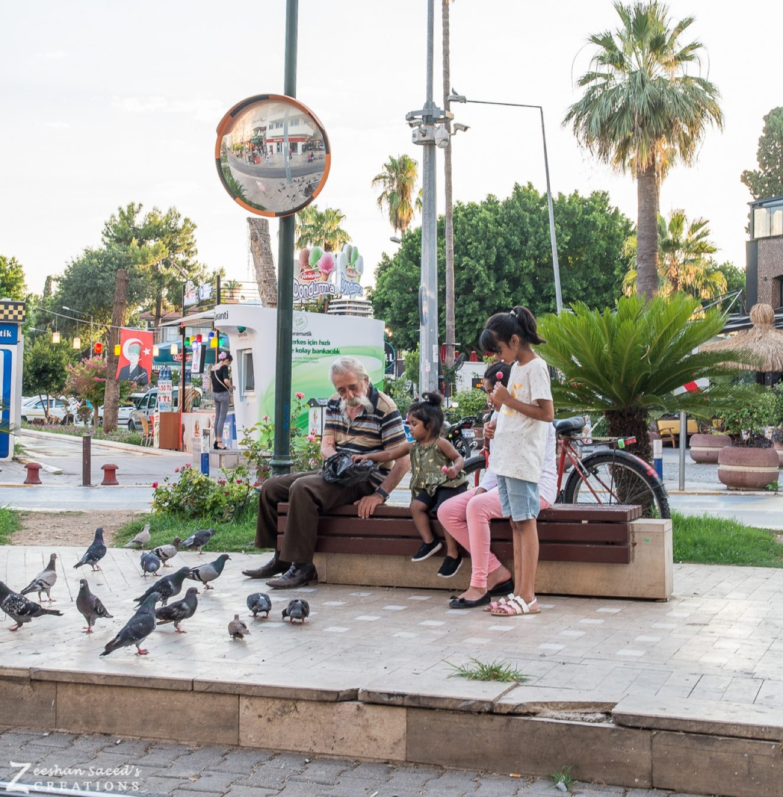
Konya (23–24 July)
Day 7 — A quieter Turkey
Taxi to the bus station, then the long bus ride inland to Konya, climbing from the coast over the Taurus Mountains onto the Anatolian plateau. Turkish intercity buses are a pleasant surprise: comfortable seats, an attendant serving tea and snacks, and screens in the seat backs. It's cheaper than flying and, with the scenery, more interesting.
We arrived around 4pm, and my first job at the Konya bus station was to book the next day's tickets to Göreme. Then we checked in to our hotel, which had a different name back then and is today the Ramada Encore by Wyndham Konya Selçuklu.
Konya felt completely different from Istanbul and Antalya: more conservative, calmer, slower. Fewer tourists, more families, wide streets and very little hustle. After a week of bazaars and beach bars, it was a rest for the nerves.
It's also one of the oldest cities in the world. Çatalhöyük, a Neolithic settlement around 9,000 years old, is about an hour away and is a UNESCO World Heritage site. In Roman times the city was Iconium, and St Paul is said to have preached here. Its golden age came in the 12th and 13th centuries, when it was the capital of the Seljuk Sultanate of Rûm, and a centre of art, scholarship and Sufi thought. That's what brought one particular scholar here from Central Asia, and what brought us here eight centuries later.
Honestly, Konya was on our route for one reason only: to visit the tomb of Rumi. Everything else was a bonus. That evening the bonus was the Kulesite shopping centre next to the hotel, with air conditioning, ice cream and a food court, which with four kids in July counts as sightseeing.
Day 8 — Rumi
In the morning we went to the Mevlana Museum, Rumi's tomb and the former lodge of his followers, the Mevlevi order. You can't miss it: a turquoise-tiled conical dome, the colour of a summer sky, rises above the complex. Inside, the tomb of Rumi is covered with gold-embroidered cloth, surrounded by the tombs of his father, his son and his followers. Around it are old manuscripts of his poetry, musical instruments, and the small cells where the dervishes lived and trained, with life-size figures showing their daily life. There's also a famous casket said to hold hairs from the beard of the Prophet (peace be upon him).
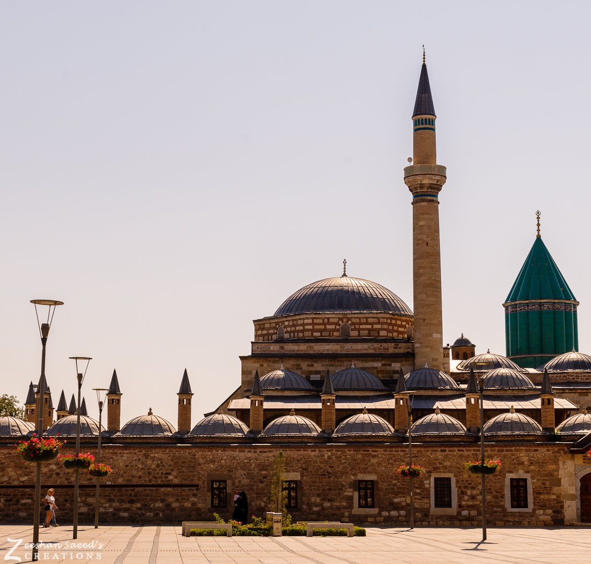
Jalal al-Din Rumi was born in 1207 in Balkh, in today's Afghanistan. His family fled west ahead of the Mongol invasions and eventually settled in Konya, where he became a respected teacher and religious scholar. Then, in 1244, a wandering dervish called Shams of Tabriz arrived in town, and everything changed. The two became inseparable. Rumi, the serious scholar, turned into a poet of divine love. Shams disappeared, came back, and disappeared again, possibly murdered by jealous followers, nobody knows for sure. Rumi's grief and longing poured into tens of thousands of verses, including the Masnavi, one of the great works of Persian literature. He died in 1273, and the anniversary of his death is still marked in Konya every December as Şeb-i Arus, his "wedding night" with God. His followers founded the Mevlevi order, known around the world for the sema, the whirling ceremony.
My own interest started with a book: Elif Şafak's novel The Forty Rules of Love, which tells the story of Rumi and Shams alongside a modern love story. If you haven't read it, read it before you go to Konya. It makes standing at the tomb a very different experience.
After the museum we walked to the Shams Tabrizi Mosque and tomb, a short walk away, only to find it closed for construction. After all those years of reading about Shams, he managed to vanish on me too. Somehow that felt in character.
Back to the hotel, check-out, and an afternoon bus to Göreme, arriving in the evening at Falcon Cave Suites, a beautiful family-run hotel carved into the rock. The welcome was so warm we felt like guests in someone's home. Dinner that night was at a Chinese restaurant, because after a week of kebabs, nobody was going to argue.
Cappadocia (25–27 July)
A word on the landscape before the tours. Millions of years ago, volcanoes around Cappadocia buried the region in thick layers of ash, which hardened into a soft rock called tuff, often with harder basalt on top. Wind and rain then carved it into valleys, cones and the famous fairy chimneys: tall pillars of soft rock with a harder cap balanced on top. The rock is so soft that people have been carving homes, churches, dovecotes and entire cities into it for thousands of years. Göreme National Park and the rock sites of Cappadocia have been a UNESCO World Heritage site since 1985.
The easiest way to see it all is with the two classic day tours, the Green Tour (south) and the Red Tour (north). We booked both through our hotel, and both include a guide, transport and lunch.
Day 9 — The Green Tour
Göreme Panorama. First stop, and the view that makes you understand why everyone comes here: a whole valley of pink and cream rock cones spread out below, with Göreme town tucked among them.
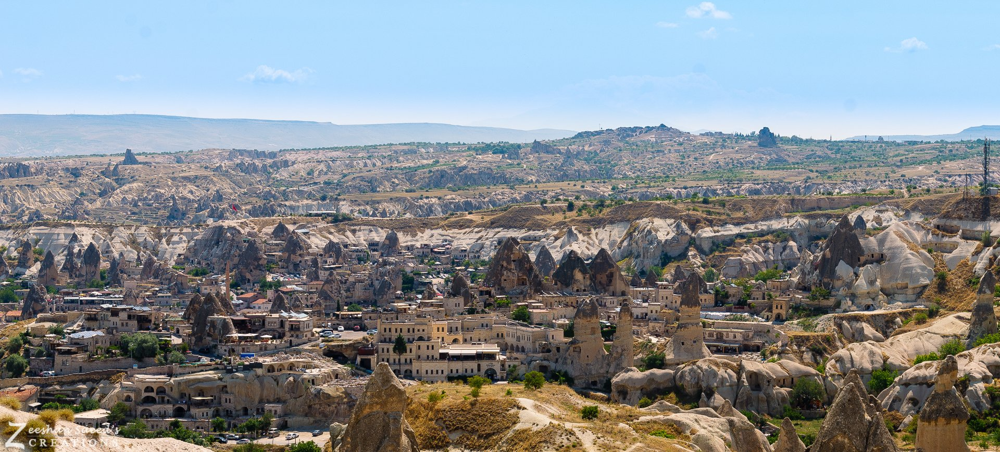
Derinkuyu or Kaymaklı Underground City. I honestly can't tell you which one we visited. Both are enormous, both are underground, and after an hour of stooping through tunnels by torchlight, one dark tunnel looks very much like another. What I can tell you is this: these cities were dug down into the rock over centuries, possibly starting in Phrygian times, and expanded in the Byzantine era. When raiders came, whole villages would disappear underground with their animals and food stores, rolling huge round stone doors across the passages behind them. Derinkuyu goes down around 85 metres and could shelter thousands of people, perhaps as many as 20,000, with stables, kitchens, wells, a chapel and ventilation shafts. Kaymaklı is shallower, with narrow, low passages. It's fascinating, and very slightly claustrophobic. Mind your head. I didn't, twice.
Ihlara Valley. A gorge about 14 km long and up to 150 metres deep, cut by the Melendiz river, with a cool, shady path along the water. The cliffs are dotted with rock-cut churches, some decorated with Byzantine frescoes. Monks lived here from early Christian times. We walked a section along the river, then had lunch by the water, at one of the restaurants with tables practically in the stream. After the Antalya heat it felt like heaven.
Selime Monastery. At the end of the valley, a huge monastery carved straight into the cliff, usually dated to the 10th–11th century, with a cathedral-sized church, kitchens, stables and living quarters, all cut out of the rock. Climbing up inside it feels like exploring a giant sandcastle. (You'll hear that Star Wars was filmed here. It wasn't; Tatooine was Tunisia. But you can see why the rumour started.)
Pigeon Valley. Our last stop, near Uçhisar, named after the thousands of dovecotes carved into the rock walls. For centuries, farmers kept pigeons not for the meat but for the droppings, which they used as fertiliser for the vineyards and orchards in this volcanic soil. It's the only valley I know that's famous for something so unglamorous, and it's beautiful anyway.
Day 10 — The Red Tour
Göreme Open Air Museum. A cluster of monasteries and churches carved into the rock, mostly from the 10th to 12th centuries. The frescoes inside some of them are astonishingly well preserved, especially in the Dark Church (Karanlık Kilise), which got so little light over the centuries that its colours are still vivid. It costs extra to enter, and it's worth it.
Uçhisar Castle. Not really a castle, but a giant rock riddled with rooms and tunnels, and the highest point around Göreme. Climb to the top and the whole valley is laid out around you. Windy, but worth every step.
Paşabağ (Monks Valley). Here are the fairy chimneys you've seen on postcards: tall stone pillars, some with two or three "heads" on one stem, which locals call mushrooms. Monks and hermits lived inside them in early Christian times, the best known being St Simeon, who carved a hermit's cell high up in one of them to get away from the world. (Also the world's first apartment with a view.)
Devrent Valley (Imagination Valley). A place to test your imagination, with no churches and no history lessons, just rock shapes that look like animals. The famous one is the camel; we also found a seal, a dolphin and several things nobody else could see but everyone insisted were there. The kids loved this game more than any museum.
Avanos. A town on the Kızılırmak, the "Red River", the longest river that flows entirely within Turkey. The red clay from its banks has been used for pottery since the Hittites, and the town is still full of potters' workshops. We watched a potter turn a lump of clay into a vase on a kick wheel in about two minutes, which made it look very easy. It is not.
Love Valley. A valley of very tall, very smooth, very... distinctively shaped rock pillars. Let's just say the name is polite, the kids asked questions, and I pointed at a bird.
Day 11 — Balloons at dawn
On our last morning we were up on the hotel roof before 7am, and the sky over Göreme filled with hot-air balloons: dozens, then a hundred or more, rising silently out of the valleys while the light turned everything gold. We didn't fly. With a two-year-old, the roof was the sensible seat, and honestly, it's the better one for photos: from up there you see all the balloons at once, not just the basket next to yours. It's one of the most beautiful things I've ever photographed, and we watched it with tea in hand and nobody needing a seatbelt.
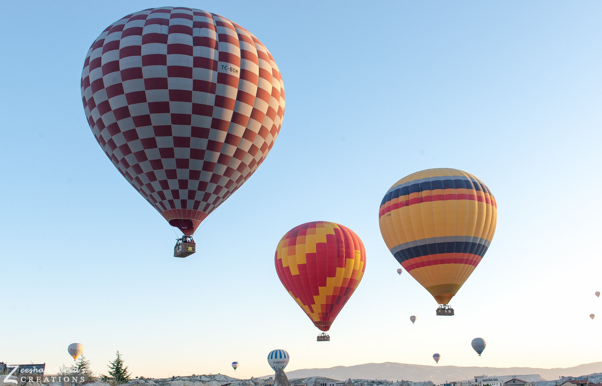
Then it was a goodbye to Falcon Cave Suites, a transfer to Kayseri airport, and a morning flight back to Istanbul.
Istanbul, Taksim and the Bosphorus (27–29 July)
Day 11 (continued) — Back to the big city
From the airport, a private taxi took us to Taksim, on the European side across the Golden Horn from the Old City, and to the Ardilas Residence: two big separate rooms, which for a family of six is the difference between a holiday and a hostage negotiation. Everyone had a bed and a corner of their own, and peace returned to the family.
After a rest we went out to explore Taksim, the markets around it and İstiklal Caddesi, and everyone loved it at once. It's a completely different Istanbul from Sultanahmet: younger, busier and noisier, and very much the modern city.
Taksim means "distribution": in the 18th century, water from the reservoirs north of the city was collected here in a stone maksem and divided out to the neighbourhoods. The building still stands at the edge of the square. In the middle is the Republic Monument, unveiled in 1928, showing Atatürk and the founders of the Turkish Republic. Taksim Square has been the place where Istanbul gathers ever since, for celebrations, protests and New Year's Eve.
İstiklal Caddesi, "Independence Avenue", runs about 1.4 km from Taksim Square down to Tünel. In Ottoman times it was the Grande Rue de Péra, the street of embassies, European merchants, churches and grand hotels, and much of the 19th-century architecture is still there above the shop fronts. Old patisseries, bookshops, music shops and arcades like the Çiçek Pasajı (Flower Passage) sit between the global brands. The little red nostalgic tram rattles up and down the middle, and tens of thousands of people walk it every day. It never really sleeps.
Day 12 — Ortaköy and the Bosphorus
After breakfast we went to Ortaköy, a waterside neighbourhood on the Bosphorus. Its name means "middle village", and for centuries it was a mix of Muslim, Greek, Armenian and Jewish communities, with a mosque, a church and a synagogue within a few streets of each other. The star is the Büyük Mecidiye Mosque, usually just called the Ortaköy Mosque, built in the 1850s by the Balyan family of architects in a light, almost Baroque style. Sitting right on the water with the Bosphorus Bridge behind it, it's one of the most photographed views in Istanbul, and for good reason. Around it are market stalls, craft sellers, and the famous kumpir, a baked potato stuffed with anything you can imagine. Highly recommended for kids and anyone who believes potatoes should have twelve toppings.
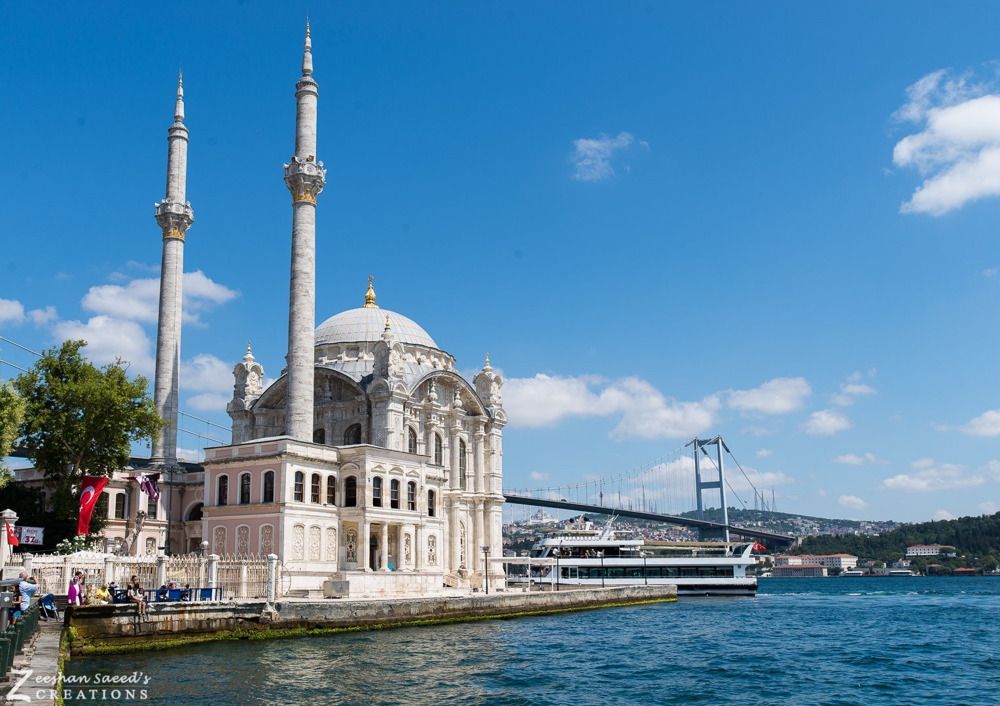
From there we took a boat cruise up the Bosphorus, the 30-km strait that splits Istanbul between Europe and Asia and joins the Black Sea to the Sea of Marmara. It has been one of the most important waterways in the world for thousands of years. Greek myth says Io swam across it as a cow (hence the name, "cow's ford"), and empires from the Persians to the Ottomans fought to control it. From the deck you see Ottoman palaces, wooden waterside mansions (yalıs), fortresses and fishing villages slide past, on two continents at once.
The highlight is Rumeli Hisarı, the Rumeli Fortress, built in 1452 by Sultan Mehmed II in only about four months. Its purpose was to cut Constantinople off from help arriving by sea from the Black Sea before the final siege. A year later, the city fell. Standing below its huge towers, you can see exactly why it worked: at this point the Bosphorus is at its narrowest, and with the older Anadolu Hisarı on the opposite shore, nothing could pass.
Back to Taksim to rest, and then a night walk along İstiklal, which is a different street after dark: musicians on every corner, crowds gathered around street performers, and the whole avenue moving at a slow, happy shuffle. It's one of those places where you stop planning and just walk.
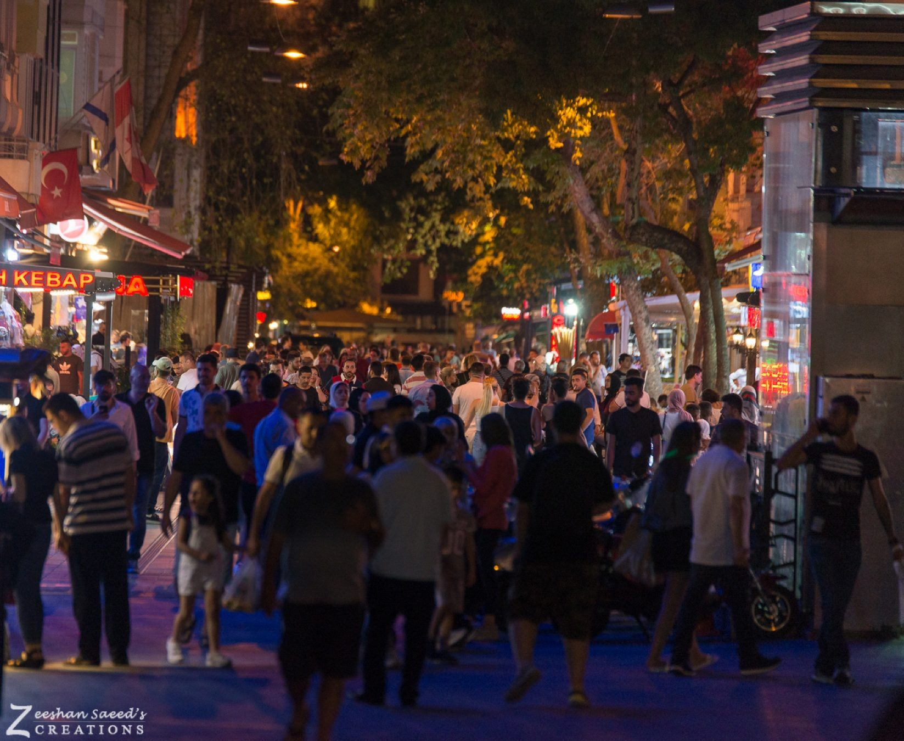
And then the find of the trip. After nearly two weeks of Turkish food, we found Karachi Darbar, a Pakistani restaurant near Taksim. I won't pretend we were tired of Turkish food, but there's a particular joy in tasting home after a long time away. Dinner, end of the day, very happy family.
Day 13 — Madame Tussauds, then back to the Old City
In the morning we visited Madame Tussauds Istanbul, on İstiklal. The kids loved it, possibly more than any mosque, museum or valley in the whole trip, which is a little painful for a father who'd planned all those mosques, museums and valleys. Alongside the international stars, it had Turkish figures from history and culture: Suleiman the Magnificent, Mimar Sinan (whose mosque we'd seen eleven days earlier), Atatürk, and the much-loved rock singer Barış Manço. Sadly, it closed for good at the start of 2025, so this is one stop you can't copy.
Then check-out and back across the Golden Horn to the Old City for the last few days.
Istanbul, the Old City again (29 July – 1 August)
Day 13 (continued) — Home ground
We checked in to the Merial Hotel in Sultanahmet, and it felt like coming home: same trams, same streets, same simit sellers. We spent the afternoon on a slow, unplanned walk around Sultanahmet, the best way to see it.
Then the Museum of Turkish and Islamic Arts, on the edge of the Hippodrome. It's housed in the 16th-century palace of İbrahim Pasha, Suleiman the Magnificent's childhood friend, brother-in-law and grand vizier, who rose higher than almost anyone in the empire before Suleiman had him executed in 1536. (Being the sultan's best friend was a high-risk career.) The collection includes some of the finest carpets in the world, some of them centuries old, along with Qur'an manuscripts, calligraphy, wood and metalwork, and a section on nomadic life with real tents. It's often quiet, even when the Blue Mosque across the square is packed.
Day 14 — Galata and an underground mosque
We crossed the Galata Bridge, where fishermen line the railings all day long, to the Galata Tower. It was built by the Genoese in 1348 as part of the walls of their trading colony, and it has been a lookout, a prison and a fire watchtower since. The most famous story is about Hezarfen Ahmed Çelebi, who, according to the 17th-century traveller Evliya Çelebi, strapped on a pair of wings in the 1630s, jumped from the top of the tower and glided all the way across the Bosphorus to Üsküdar. Whether that really happened is another question. The view from the top, across the Golden Horn to the Old City's domes and minarets, is real enough.
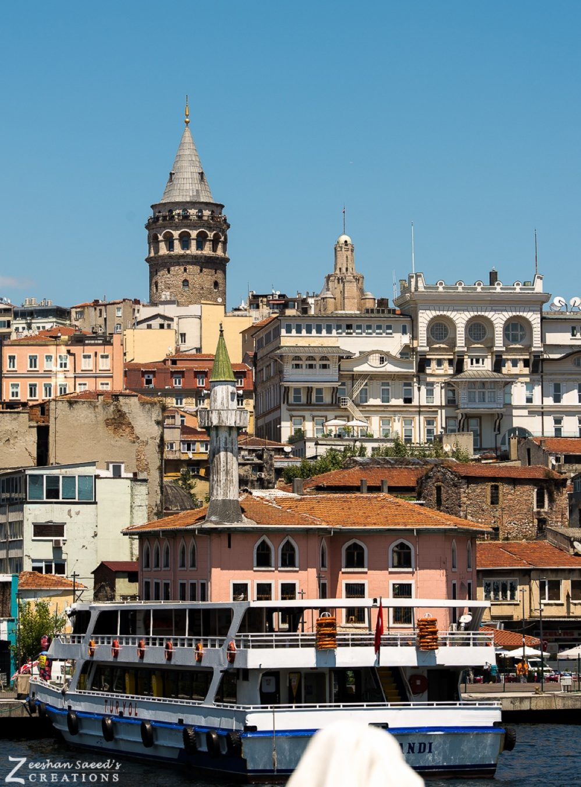
Nearby, in Karaköy, is the Yeraltı Mosque, the "Underground Mosque", one of the strangest places of worship I've ever been in. It's a low, dim, vaulted space, a forest of thick stone pillars, which was probably the basement of a Byzantine fortress that guarded the Golden Horn; the great chain that blocked the harbour to enemy ships is said to have been anchored nearby. It became a mosque in 1757, and it also holds the tombs of two early Muslim warriors said to have died during the Arab sieges of Constantinople.
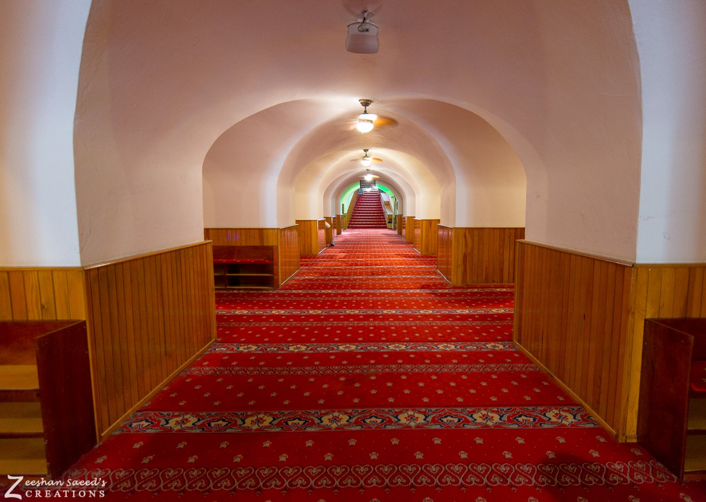
My wife wasn't feeling well, so we kept the day short and postponed Hagia Sophia and Topkapı to the following day. That turned out to be a gift: they deserve a full day, not a tired afternoon.
Day 15 — Hagia Sophia and Topkapı
We saved the best for last, and spent the whole day on the two greatest sights in the city.
Hagia Sophia was built for Emperor Justinian between 532 and 537, in under six years, and for nearly a thousand years it was the largest church in the world. Its dome seems to float, held up on a ring of windows, and the story goes that when Justinian first walked in, he said, "Solomon, I have surpassed you." After the Ottoman conquest in 1453, Mehmed II converted it into a mosque, and it later gained minarets, a mihrab and the huge calligraphy roundels with the names of God, the Prophet Muhammad and the first caliphs. In 1935, under Atatürk, it became a museum, and that's how we saw it in 2019: Byzantine mosaics of Christ and the Virgin Mary sharing a space with Islamic calligraphy, which gives the building a rare feeling of two worlds at once. In 2020 it became a mosque again, and it is open for prayer and for visitors. Look out for the "weeping column", a column with a hole in a bronze plate where people put their thumb and make a wish.
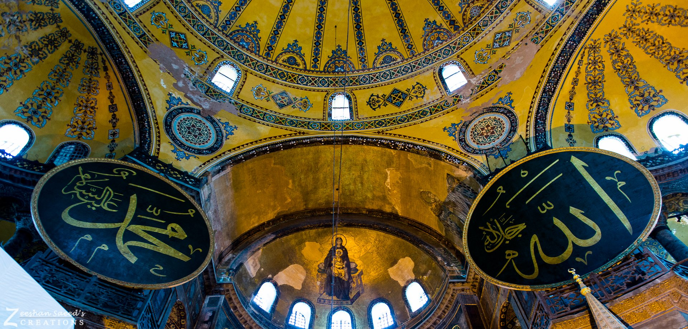
Then Topkapı Palace, home of the Ottoman sultans and the centre of their empire for about 400 years, from the 1460s until the mid-19th century, when they moved to Dolmabahçe Palace on the Bosphorus. It isn't one building but a series of courtyards, gardens, kiosks and pavilions, each more private than the last, with views over the Bosphorus and the Sea of Marmara. Highlights:
- The Sacred Relics (Privy Chamber), which hold relics associated with the Prophet Muhammad (peace be upon him), including his cloak and items attributed to him, and where the Qur'an is recited continuously. It was the most moving part of the day for us.
- The Treasury, with the Topkapı Dagger and the Spoonmaker's Diamond, an 86-carat diamond with a story that a fisherman found the stone in a rubbish heap and swapped it for three spoons.
- The Harem, a separate ticket, but worth it: a labyrinth of hundreds of rooms (around 400 by most counts) where the sultan's family lived, with some of the most beautiful tiles in Istanbul.
- The kitchens, which once fed thousands of people a day, and now hold one of the world's great collections of Chinese porcelain.
By closing time we were exhausted, and very, very happy.
Day 16 — Home
On 1 August we flew from Sabiha Gökçen back to Sharjah, with a bag full of Turkish delight, a camera full of photos, and a family debating which city was best. For once, the debate was short: Istanbul, unanimously. Antalya's heat, Konya's calm and Cappadocia's balloons all had their moments, but Istanbul had everything, and it had us from the first evening in Sultanahmet Park. We'll be back.
Want more? Every photo from the trip, city by city, is in the Turkey gallery.
See all 43 Turkey photos